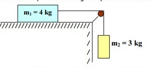

rm.- Sobre una superficie lisa horizontal se
coloca un bloque de 4kg. Una cuerda horizontal atada al
bloque pasa por una polea, de masa despreciable y sin
rozamiento, y va unida por el otro extremo a un cuerpo de masa
3kg. Despreciando el rozamiento con la superficie, calcula la
aceleración que adquiere el sistema cuando se deja en libertad
